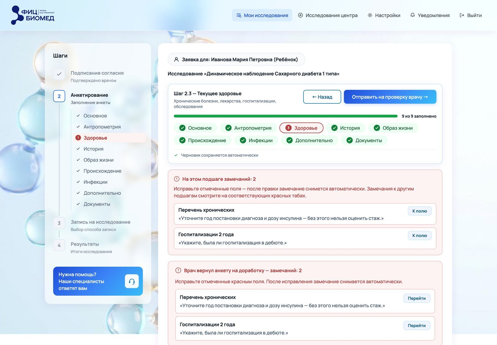
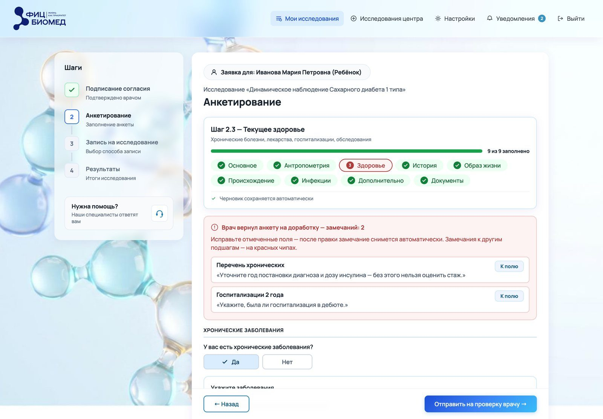

5. Формы и анкеты
В этой главе
Форма это место, где продукт получает данные от человека. Почти каждая потеря пользователя в сервисе с заявками происходит в форме: человек устал, не понял вопрос, испугался ошибки или потерял введённое. Поэтому форму проектируют так же тщательно, как главный экран.
Сначала решить, нужен ли вопрос
Каждое поле стоит человеку времени и внимания. Перед тем как добавить вопрос, его проверяют тремя вопросами:
- Кто использует ответ и для чего? Если ответ никто не читает, поле лишнее. Почему: лишние поля удлиняют форму и снижают долю тех, кто её закончит.
- Можно ли узнать ответ без человека? Возраст из даты рождения, индекс массы тела из роста и веса, город из адреса. Почему: человек не должен считать то, что посчитает система, и не ошибётся в расчёте.
- Нужен ли ответ сейчас? Часть данных можно спросить позже, когда они понадобятся. Почему: короткий первый шаг чаще доводят до конца, а доверие к сервису растёт по ходу работы.
Порядок и группировка
- Вопросы группируют по смыслу. «О здоровье», «О семье», «Образ жизни». Почему: человек отвечает на похожие вопросы быстрее, когда держит в голове одну тему.
- От простого к сложному. Сначала то, что человек знает наизусть, потом то, что нужно вспомнить или найти. Почему: начатая форма удерживает лучше, чем пустая, и к сложным вопросам человек подходит уже вовлечённым.
- Вопросы, которые относятся не ко всем, раскрываются по ответу. Почему: человек не читает то, что к нему не относится, и форма выглядит короче, чем есть на самом деле.
- Ветки по признаку человека. Разные вопросы детям и взрослым. Почему: вопрос не по адресу раздражает и заставляет думать, как на него ответить.
Один шаг или мастер
| Форма | Когда выбирать | Почему |
|---|---|---|
| Одна страница | До 10–15 полей, одна тема | Видно всё сразу, легко проверить перед отправкой |
| Мастер с шагами | Длинная форма, шаги зависят друг от друга | Прогресс виден, на каждом шаге меньше нагрузки |
| Разделы с навигацией | Длинная анкета, порядок не важен | Человек заполняет, что знает, и возвращается к остальному |
Анкета в кабинете участника устроена разделами с навигацией внутри шага мастера. Что это даёт: человек может прерваться, вернуться через день и сразу увидеть, какие разделы ещё пусты.
Подписи, подсказки и примеры
- Подпись над полем. Почему: так глаз движется вниз по одной линии, а подпись видна и после ввода.
- Пример под полем, а не внутри. Почему: серый пример в пустом поле можно принять за уже введённое значение.
- Обязательность одинаково везде. Почему: если в одном месте звёздочка значит «обязательно», а в другом «важно», человек перестаёт доверять пометкам.
- Вопрос как в разговоре. «Сколько раз за последний год вы лежали в больнице?» вместо «Количество госпитализаций (за 12 мес.)». Почему: живую формулировку понимают с первого раза и реже отвечают неточно.
Тип поля под ответ
| Ответ | Поле | Почему |
|---|---|---|
| Один вариант из 2–5 | Переключатели (радиокнопки) | Все варианты видны сразу |
| Один из многих | Список с поиском | Длинный список без поиска приходится листать |
| Несколько вариантов | Чекбоксы | Видно, что можно выбрать больше одного |
| Да или нет | Два переключателя «Да» и «Нет» | Чекбокс не различает «нет» и «не ответил» |
| Дата | Поле с маской или три поля | Календарь неудобен для даты рождения 40 лет назад |
| Число | Поле с цифровой клавиатурой | На телефоне сразу открываются цифры |
Проверка полей
Когда показывать ошибку, решают по поведению людей в этой форме.
| Подход | Когда подходит | Цена |
|---|---|---|
| Сразу при уходе из поля | Короткие формы, формат (телефон, почта) | Ошибки появляются, пока человек ещё вводит соседние поля |
| При переходе к следующему шагу | Мастер с зависимыми шагами | Нельзя посмотреть следующие шаги, не заполнив текущий |
| Один раз при отправке | Длинные анкеты, которые люди листают | Об ошибках узнают позже |
Общие правила:
- Все ошибки шага показывают одним проходом. Почему: если ошибки выдаются по одной, человек исправляет, жмёт снова и получает следующую. Это раздражает больше, чем список сразу.
- Красный только для ошибки. Незаполненное поле ошибкой не является, пока человек не попытался отправить. Почему: красный при просмотре наказывает человека за то, что он ещё не начал.
- Сводка ошибок со ссылками на поля. Почему: в длинной форме ошибка может быть за пределами экрана, и человек не найдёт её сам.
Сохранение
- Черновик сохраняется сам при каждом изменении. Почему: человек может уйти в любой момент, и потеря введённого почти всегда означает, что он не вернётся.
- Метка времени сохранения видна. «Черновик сохранён в 14:32». Почему: без метки человек не доверяет автосохранению и боится закрыть страницу.
- Сохранённое переживает выход из аккаунта. Почему: обещание «сохранено» должно держаться, иначе следующему обещанию не поверят.
Прогресс
- Прогресс считает факт заполнения. Раздел засчитан, когда в нём есть ответы. Почему: если прогресс считает позицию, человек видит «70 %», хотя пропустил половину.
- Ответ «нет» засчитывается. Почему: «нет» это полноценный ответ, и человек не должен чувствовать, что анкета считает его ленивым.
- Один расчёт прогресса на весь продукт. Почему: если в двух местах прогресс считается по-разному, человек видит противоречие и перестаёт верить обоим.
Возврат на доработку
Если форму проверяет человек и возвращает с замечаниями, возврат проектируют отдельно.
- Замечание привязано к полю. Почему: «исправьте анкету» не говорит, что чинить.
- Раздел с замечанием выделен и показывает их число. Почему: человек сразу видит объём работы и не ищет замечания по всей форме.
- Есть переход прямо к полю. Почему: в анкете на сто полей поиск поля сам по себе отнимает силы.
- Исправленное замечание снимается само. Почему: человеку не нужно отдельно отмечать, что он исправил, и врач видит актуальное состояние.




Сводка перед отправкой
Перед отправкой длинной формы показывают сводку ответов с возможностью изменить каждый. Почему: человек проверяет себя один раз в конце и уверен в том, что отправляет. Проверять каждый шаг отдельно утомительно.
Согласия
- Отдельная отметка на каждое согласие. Почему: согласие должно быть осознанным действием. Побочный эффект другой кнопки согласием не считается.
- Ссылка на документ рядом. Почему: человек вправе прочитать, на что соглашается, не уходя из формы.
- Без формулы «продолжая, вы соглашаетесь». Почему: такая формула делает согласие незаметным, а в медицине и при работе с данными это недопустимо.
Форма за другого человека
Если форму заполняют за ребёнка или родственника:
- сразу спросить, за кого. Почему: от ответа зависят вопросы, подписи и согласия;
- дать добавить человека прямо в форме. Почему: уход в настройки рвёт поток, и человек теряет место, где остановился;
- писать «ребёнок», «участник» вместо «вы» там, где речь о другом. Почему: «Ваш рост» в анкете за ребёнка заставляет гадать, чей рост вписать.
Главное в главе
- Каждое поле должно иметь потребителя ответа.
- Вопросы группируют по смыслу, лишние раскрываются по ответу.
- Пример стоит под полем, подпись над ним.
- Время проверки полей выбирают по поведению людей.
- Все ошибки шага показывают одним проходом.
- Черновик сохраняется сам и переживает выход.
- Прогресс считает факт заполнения одним расчётом на весь продукт.
- Замечание привязано к полю и снимается само.
Вопросы для самопроверки
- Почему для вопроса «да или нет» чекбокс хуже двух переключателей?
- Когда проверять поле сразу, а когда при отправке?
- Зачем показывать время сохранения черновика?
- Почему исправленное замечание должно сниматься само?
Упражнение
Возьмите любую длинную форму (регистрация, заявка, анкета). Для каждого поля ответьте: кто использует ответ, можно ли его не спрашивать, нужен ли он сейчас. Сократите форму и опишите, что изменится для человека.